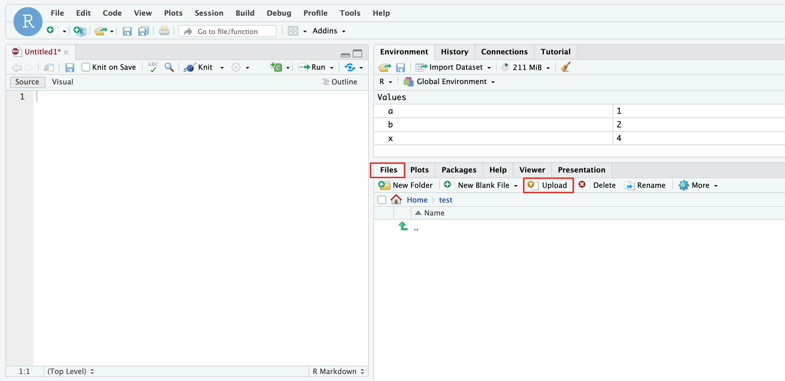
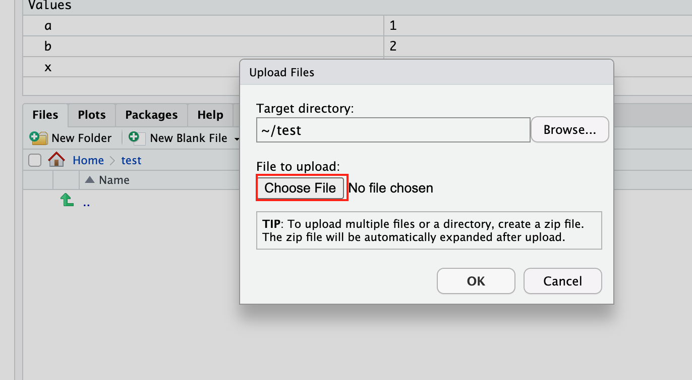
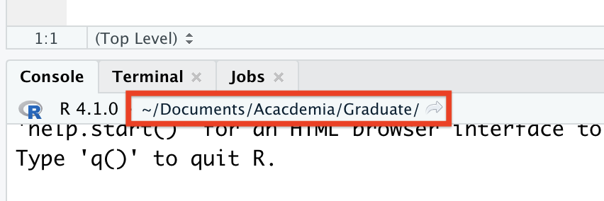
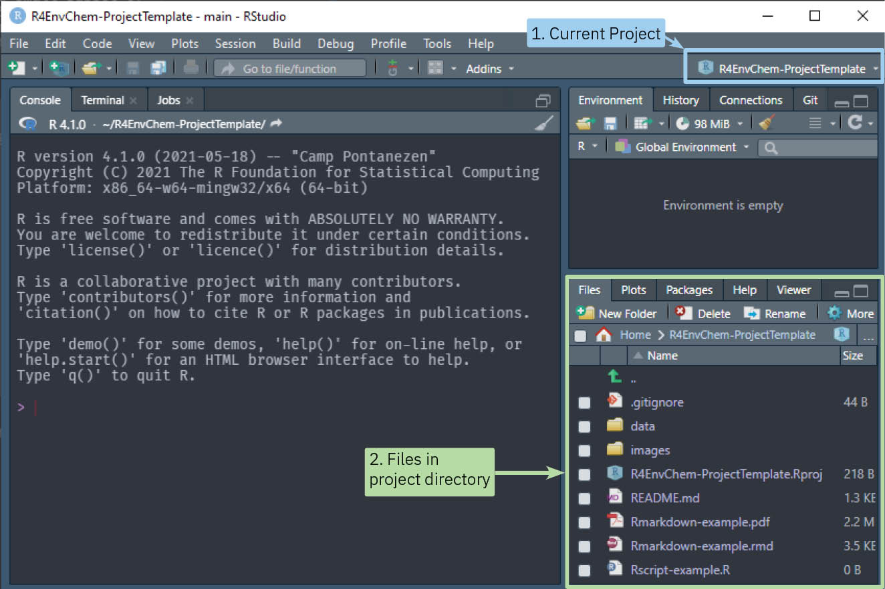
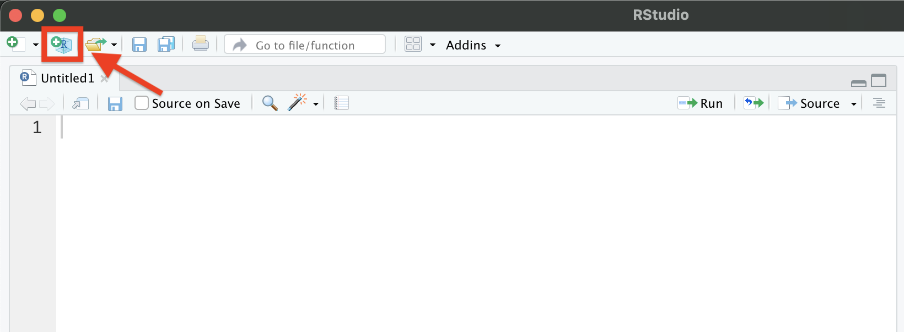
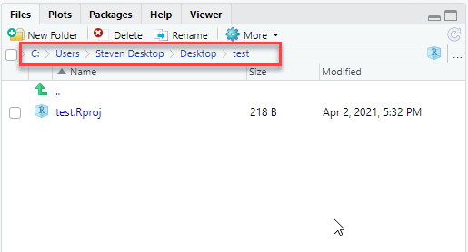

Chapter 2 RStudio Projects
You’re probably eager to start coding, but an equally important aspect is understanding the structure of your work. Knowing how to organize the files needed for your analysis and how to access them quickly is critical. Learning this early on will save you plenty of time and heartache down the line. So let’s hold off on coding and consider where we’re working on your computer.
Because we believe in it so much, we’ll say it up top: Always work inside an RStudio Project, and use a unique project for each lab/experiment.
2.1 Uploading Files to RStudio server on JupyterHub
When using the RStudio Server instance provided through JupyterHub, you may want to upload local data files, R scripts, or other relevant resources to work with them directly in RStudio. Here’s a straightforward guide on how to accomplish this.
Step-by-step guide
Once inside the RStudio server, you’ll notice several panes. One of these is the
Filespane, typically found in the bottom right corner. This pane displays the current directory’s contents and allows you to manage files and folders.In the
Filespane, locate and click on theUploadbutton.

- Then, click
Choose Filebutton to navigate to the location of the files on your local computer that you wish to upload to the RStudio Server.

This will prompt a file dialog to appear. Select the desired file(s) and click on Open or Choose (depending on your browser).
Once the file names appear in the RStudio interface, there might be a confirmation step to complete the upload. Click on
OKorUploadto finalize the process.After uploading, the uploaded files will appear in the
Filespane.
2.2 Paths and directories
Before you get started with running your code, it is good to know where your analysis is actually occurring, or where your working directory is. The working directory is the folder where R looks for files that you have asked it to import, and the folder where R stores files that you have asked it to save.
RStudio displays the current working directory at the top of the console, as shown below, but can also be printed to the console using the command getwd().

By default, R usually sets the working directory to the home directory on your computer. The ~ symbol denotes the home directory, and can be used as a shortcut when writing a file path that references the home directory.
You can change the working directory using setwd() and an absolute file path. Absolute paths are references to files which point to the same file, regardless of what your working directory is set to. In Windows, absolute paths begin with "C:", while they begin with with a slash in Mac and Linux (i.e., "/Users/Vinny/Documents"). It is important to note that absolute paths and setwd() should never be used in your scripts because they hinder sharing of code – no one else will have the same file configuration as you do. If you share your script with your TA or Prof, they will not be able to access the files you are referencing in an absolute path. Thus, they will not be able to run the code as-is in your script.
In order to overcome the use of absolute paths and setwd(), we strongly recommend that you conduct all work in RStudio within an R project. When you create an R project, R sets the working directory to a file folder of your choice. Any files that your code needs to run (i.e., data sets, images, etc.) are placed within this folder. You can then use relative paths to refer to data files in the project folder, which is much more conducive to sharing code with colleagues, TAs, and Profs.
2.3 Importing a project
While you can create a project from scratch (discussed below), we’ve created a draft project template. Download it, and you’ll have a working RStudio project that you can use as you follow along with the code in the rest of this chapter and the tutorial exercise.
- Downloading the template project (zip file) from the GitHub repository here; there are instructions on downloading at the bottom of the repositories webpage.
- Upload the project zip file to JupyterHub, and unzip the folder.
- From RStudio click
File->Open Project...and open theR4EnvChem-ProjectTemplate.Rprojfile from the unzipped folder.
If you’ve followed the steps above you should have successfully downloaded and opened an RStudio project, and it should look like this:

Note how the project name is displayed on the top right. You can quickly switch between projects here which is useful if you’ll be using R for many different labs/courses. As well, take note that the working directory has changed to the one where the RStudio project is located. Since you’ve downloaded the entire project, the working directory for the project includes the example scripts and data files you’ll need to continue along with the remainder of this book. If you open the project folder (or access it from the Files tab) it should look like this:
R4EnvChem-ProjectTemplate
│ R4EnvChem-ProjectTemplate.Rproj
│ Rscript-example.R
| README.md
| Rmarkdown-example.rmd
│
└───data
│ 2018-01-01_60430_Toronto_ON.csv
│ 2018-07-01_60430_Toronto_ON.csv
| ...
│
└───images
│ DHall_TorontoPano.jpgWith the R4EnvChem-ProjectTemplate.Rproj file located in the main folder, this is important as we’ll be able to readily look for files we stored in project subfolders such as data and images.
As you can see, the R4EnvChem-ProjectTemplate.Rproj file is located in the main folder, which RStudio will now treat as the working directory. Essentially it means we’ll be able to quickly access files in project subfolders such as data and images without having to find out what the full file path is for your own computer. You’ll appreciate this as you progress through this book.
In the future you can create your own projects from scratch, but it behooves you to follow the template layout. Having consistently named folders you’ll use in every project will help simplify your life down the road.
2.4 Creating an RStudio project
We’ve provided instructions on creating your own RStudio project from scratch, but you can always copy the template project folder above (or any for that matter) to re-purpose it as you see fit.
To create a new project: go to File->New Project, or click the button highlighted in the image below. Click New Directory, then New Project.
 You may want your project directory to be a sub-folder of an existing directory on your computer which already contains your data sets. If this is the case, click Existing Directory instead of New Directory at the previous step, and then select the folder of your choice.
Next, you’ll be asked to choose a sub-directory name and location. Enter your selected name and choose an appropriate location for the folder on your computer. Click Create Project, and you should now see your chosen file path displayed in the Files tab of the Viewer pane:

When working on assignments for coursework, it is good practice to create a new R project for each assignment you work on. You should store the data, images, and any other files required for that assignment within the folder for the designated R project. You can create sub-folders for data and images, however, you may want to avoid making too many nested sub-folders, as this will make your paths long and tiresome to type. For a hypothetical course with 5 Labs (cough CHM410 cough), your coursework would look like this:
CHM410
|
└─── Project 1
| |
| | project1.Rproj
| | project1WriteUp.Rmd
| └───data
| │ ...
| └───images
| ...
|
└─── Project 2
|
| project2.Rproj
| project2WriteUp.Rmd
└───data
│ ...
└───images
...
...With a separate folder for each experiment, and within each folder is an RStudio project, data, images, and other files required for that specific project. You shouldn’t have nested R studio project as there is no benefit to this approach. Keep everything you need in one location, and no more.
2.5 A sneak peek at .Rmd files
In this textbook, you will exclusively work with .Rmd (R Markdown) files, which offer a dynamic and interactive platform for blending code, text, and output.
Within an .Rmd file, you will encounter two distinct components: code and text.
- Text fields, easily accessible by inserting regular text, allow you to compose explanations, context, and interpretations using plain language. These text fields can be created directly within the
.Rmddocument. - Code chunks, on the other hand, house R code that can be executed to generate results and graphics.
We will learn more about working with R markdown in the later chapters.
2.6 Summary
In this chapter we’ve covered:
- Importing the R4EnvChem Project Template so we have access to data for the tutorial (amongst other things)
- The concept of paths and directories and how relative referencing withing a project greatly simplify this
2.7 Exercise
For this chapter, you will create your own R project in UofT JupyterHub RStudio.
2.7.2 Confirm Your Working Directory
- Use the
getwd()function in RStudio to display the current working directory in the console. - Ensure that the working directory in RStudio is the location where you’d like to set up your project.
2.7.3 Creating Your Own Project:
- Launch a new RStudio project. To do this, go to File -> New Project.
- Choose “New Directory”.
- Select “New Project”.
- Name the project “MyFirstRProject” and choose a convenient location to save it.
- Click on “Create Project”.
- Use the
getwd()function again to check your current working directory and confirm you’re in the “MyFirstRProject” directory. - Inside the “MyFirstRProject” directory, create two new folders: “data” and “notebook”. You can do this using RStudio’s ‘Files’ tab or using the
dir.create()function in the R console.
2.7.4 Create Your Rmd File:
- Within your “MyFirstRProject” directory, create a new
.Rmd(R Markdown) file. You can do this by going to File -> New File -> R Markdown. - Name the file “MyFirstRMarkdown” and set HTML as the default output format.
- In the text section of the
.Rmdfile, write one thing you remember about R and RStudio. - Insert a code chunk below what you wrote. In this code chunk, type
sum(1:10), which calculates the sum of numbers from 1 to 10. - Knit the document to see the results. This will produce an HTML or PDF document that shows both your text and the results of your R code.
2.7.5 Upload a file from your computer:
- Start by visiting the Exploring Air Quality Data website and navigate to the
My Datatab. - Once there, choose your preferred options on the left side. Then, on the right side, input your student number to retrieve your data. After your data displays, click on the
Download Your Data!button to download the data as a CSV file (as shown in Figure 1). - Next, upload this downloaded data to the “data” folder within your RStudio project. If you’ve forgotten how, just refer back to the beginning of this chapter for a quick reminder.
- After the upload, you’ll be able to spot your data in the
Filespane of RStudio. Simply click on the data’s name and then selectView Fileto peek at your raw data.